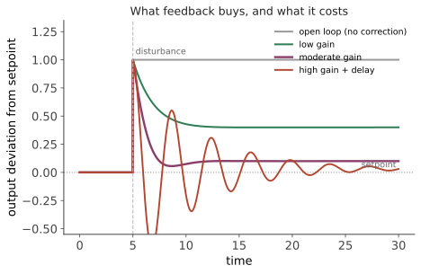

本页目录
经典 I · 为什么要反馈
层次：本科核心——这是整门课的思想原点。 反馈的定义只有一句话：测量输出，与目标比较，用误差驱动修正。但它带来的性质如此之多、如此深刻，以至于整个学科都建立在这一句话上。本页说明反馈买到了什么、以及代价是什么——后者正是全课其余部分要处理的问题。
学习层：给输送线伺服选回路增益，先看清谁被压下、谁被抬起
1. 具体工程情境：同一条伺服回路，参考、负载和编码器噪声走哪条路？
把一台输送线定位伺服在工作点附近简化为
设负反馈误差为 \(e=r-y_m\)，测量值为 \(y_m=y+n\)。为了区分工程上经常混在一起的“扰动”，记 \(d_i\) 为对象输入端的负载扰动，记 \(d_o\) 为对象输出端的外力/偏置，\(n\) 为传感器输出端加上的噪声。最小模型是
预测门，必须先作答：在打开实验前写下三项预测：
- 当 \(|L|\gg1\) 时，参考输入到输出的通道更接近 \(0\) 还是 \(1\)？
- 低频的对象输入扰动 \(d_i\) 与高频传感器噪声 \(n\)，谁更容易被当前回路压制？
- 若把负反馈改成正反馈，分母仍是 \(1+L\) 吗？
2. 正式公式桥：同一个灵敏度函数解释鲁棒性，也解释三种注入位置
在标准负反馈约定下，闭环特征分母是 \(1+L\)，所以
把上面的三个注入位置代入最小模型，可审计地得到
以及
所以：参考跟踪是 \(T\)；对象输入端扰动先经过 \(P\)，再经过 \(S\)；输出端扰动直接经过 \(S\)；传感器噪声对物理输出的路径是 \(-T\)。如果把扰动放到别的节点，路径公式也必须跟着变，不能只背“扰动都乘 \(S\)”。
若对象发生小的乘性变化 \(P\mapsto P+\Delta P\)，在固定 \(C\) 且 \(|\Delta P/P|\) 足够小时，才可以写成一阶/微分灵敏度近似
3. 动手实验：逐频率核对灵敏度恒等式与路径账本
先提交预测，再拖动 \(K\) 与频率，选择一个注入位置。实验画出 \(|S|\) 与 \(|T|\) 的频率曲线，并在游标频率逐行列出 \(P,L,1+L,S,T\) 以及被选路径的输出幅值。按默认 \(K=8,\omega=0.5\ \mathrm{rad/s}\) 读一遍账本，再把频率提高到 \(8\ \mathrm{rad/s}\)：低频的“压扰动”与高频的“不过度传感器噪声”不会由同一个大数字同时保证。
JavaScript 失效时的静态 fallback：取 \(K=8\)、\(\omega=0.5\ \mathrm{rad/s}\)、\(P(j\omega)=1/(1+j1.2\omega)\)。此时
并且 \(S+T=1\)（数值舍入误差约 \(10^{-3}\)）。各路径的幅值因子为
| 注入位置 | 到物理输出 \(y\) 的路径 | 幅值因子（约） | 工程读法 |
|---|---|---|---|
| 参考 \(r\) | \(T\) | \(0.887\) | 当前频率仍能跟随 |
| 对象输入 \(d_i\) | \(PS\) | \(0.111\) | 先经对象，再被灵敏度压低 |
| 对象输出 \(d_o\) | \(S\) | \(0.129\) | 直接进入输出，但仍被反馈纠正 |
| 传感器噪声 \(n\) | \(-T\) | \(0.887\) | 物理输出路径与参考通道同幅，符号相反 |
这里的“鲁棒”只表示在这个 LTI 工作点、这个注入定义和这个频率上的灵敏度结论；饱和、采样、时滞和未建模共振仍需单独检查。
4. 误区与模型边界
- “反馈把所有东西都乘成 \(S\)”是错的：对象输入端、对象输出端和传感器端的路径不同；先画注入位置，再推公式。
- \(S+T=1\) 是复数恒等式，不是两个幅值相加：一般不能把 \(|S|+|T|\) 当成 1。
- 高环路增益不是无条件的鲁棒性：未建模动态、时滞和执行器饱和可能让 \(L\) 的相位/幅值离开这套最小模型。
- 符号约定是边界：这里采用 \(e=r-y_m\) 的负反馈；若实际结构是正反馈或把负号并入 \(C\)，特征分母变为 \(1-L\)，\(S,T\) 的定义必须重新推导。
迁移问题：一条温控回路的低频开门扰动很大，同时编码器/温度传感器在高频有噪声。你会把主要设计努力放在提高低频 \(|L|\)、降低高频 \(|T|\)，还是两者都无限提高？请用 \(S+T=1\) 和至少一个注入路径说明你的取舍。
一、开环 vs 闭环
开环控制：按预定规律施加输入，不看结果。烤箱定时器、按固定开度供气、机器人按预编程轨迹运动。
闭环控制：测量实际输出，与设定值比较，按误差修正。
开环并非一无是处——它简单、便宜，而且没有由反馈回路产生的闭环特征方程，因此不会出现“调环路增益把闭环推过稳定边界”这一类失稳机制。在对象特性已知且干扰很小时完全够用。可是这不等于开环输出绝不会发散：不稳定的对象、执行器内部动态、错误的固定输入或饱和后的非理想行为仍可能让系统不稳定。工业上大量场合就用开环（步进电机开环定位、许多加热控制）。
但开环有三个致命弱点：
- 无法抵抗干扰：外界扰动（负载变化、风、环境温度）没有任何机制被察觉与补偿；
- 依赖模型精度：控制律基于对象模型，模型错了输出就错；
- 无法应对变化：对象参数随温度、老化、磨损漂移，开环控制器毫无办法。
二、反馈买到的四样东西
考虑标准负反馈结构：控制器 \(C(s)\)、被控对象 \(P(s)\)，回路增益 \(L = PC\)。闭环传递函数：
注意一个恒等式，它将贯穿全课：
① 降低对模型误差的敏感性。 对象发生足够小的乘性变化时，闭环变化的一阶/微分近似为：
\(|S| \ll 1\) 的频段，对象误差的一阶影响被压缩了约 \(|S|\) 倍。 这就是导论说的"用增益换精度"——一个特性糟糕、会漂移的执行机构，套上高增益反馈后，闭环行为主要由控制器与反馈网络决定，但只在小扰动、模型适用的频段内成立。
② 抑制干扰。 先标清注入点：若 \(d_i\) 加在对象输入端，\(y/d_i=PS\)；若 \(d_o\) 加在对象输出端，\(y/d_o=S\)；若噪声 \(n\) 加在传感器输出端，\(y/n=-T\)。因此不能不加说明地说“干扰都被乘上 \(S\)”。
③ 改变动态特性。 反馈可以改变系统的极点位置——把慢的变快、把振荡的变稳（第四页根轨迹讲这件事怎么做）。
④ 镇定不稳定对象。 有些对象本身就不稳定（倒立摆、某些飞行器、磁悬浮），只有反馈能让它们工作。这是反馈不可替代的场合。
三、代价：反馈会制造不稳定
这是全课的中心张力。 反馈回路里，误差驱动修正、修正改变输出、输出又改变误差——如果这个循环的相位延迟足够大，修正就会变成"火上浇油"。
直觉：假设某频率下回路的相移达到 180°，那么"负反馈"在该频率上实际变成了正反馈。若此时回路增益还大于 1，扰动就会被不断放大 → 振荡或发散。
这直接给出了稳定性判据的雏形：要稳定，需要在增益降到 1 之前，相位还没转到 −180°。相位裕度正是这个余量的度量（第五页正式处理）。
时滞是反馈的头号敌人：纯延迟 \(e^{-\tau s}\) 不改变幅值，却在高频引入无限累积的相位滞后。所以有大延迟的系统（长管道的化工过程、网络控制、有通信延迟的远程操作）必须降低增益、牺牲性能才能稳定。

四、稳态误差与积分作用
只用比例控制（\(C = K\)）时，闭环稳态误差为
除非 \(K \to \infty\)，否则误差永不为零。 这在很多应用中不可接受（温度必须精确到设定值、位置必须准确到位）。
解法是积分作用：\(C(s) = K_i/s\)。积分器在直流（\(s\to 0\)）有无穷大增益，于是 \(S(0) = 0\)——只要还有误差，积分就持续累加修正，直到误差归零。
这就是 PID 里的 I（第六页详述），也是内模原理的最简单情形：要无静差地跟踪某类信号，控制回路内部必须包含该信号的模型（跟踪阶跃需要积分器、跟踪正弦需要该频率的谐振器）。这是一个漂亮而普适的结论。
代价：积分器引入 −90° 相移，恶化稳定裕度；且带来积分饱和（windup）问题（第六页）。又是同一个权衡：性能与稳定性。
五、反馈之外：前馈
反馈是"事后纠错"——必须先有误差才能修正，因此永远滞后。若干扰可测或参考轨迹已知，可以用前馈主动补偿，不必等误差出现。
- 前馈的优点：在不改变标称反馈特征方程的理想线性模型里，它不构成额外反馈回路，响应快；但执行器饱和、前馈模型误差、未建模动态和信号延迟仍可能造成实际问题；
- 前馈的缺点：完全依赖模型精度，无法处理未测量的干扰。
工程上的标准做法是二者结合：前馈负责快速、已知的部分，反馈负责纠正剩余误差与未知干扰。这是实际工业控制系统的常见架构（也是🔗 生物站"应变稳态"那一节的对应物：身体在运动前就提前升高心率，这是前馈；再靠反馈修正）。
六、反馈无处不在
值得一提的是这个思想的普适性——同一套数学出现在极不相同的领域：
| 领域 | 反馈回路 |
|---|---|
| 生理学 | 体温、血糖、渗透压调节（🔗 生物站） |
| 电子电路 | 运放负反馈、PLL、稳压器（🔗 微电子站） |
| 经济 | 价格调节供需 |
| 生态 | 捕食者—猎物 |
| 机器学习 | 梯度下降（误差驱动的参数修正） |
这不是牵强类比：它们服从同样的稳定性条件、同样的增益—时滞权衡、同样的振荡机制。学会反馈，就获得了一副能看穿许多系统的眼镜——这是本学科给人最耐久的东西。
七、要点
- 反馈买到：降低模型敏感性、抑制干扰、重塑动态、镇定不稳定对象；
- 代价是可能失稳，根源在于回路的相位滞后；时滞是头号敌人；
- 积分作用消除静差，代价是相位滞后与饱和问题；
- \(S+T=1\) 是全课反复出现的恒等式；
- 前馈 + 反馈是工程实践的标准组合。
下一页：要定量地谈这些，先得把系统写成数学。建模与传递函数——如何把一个物理装置变成可以分析的对象。